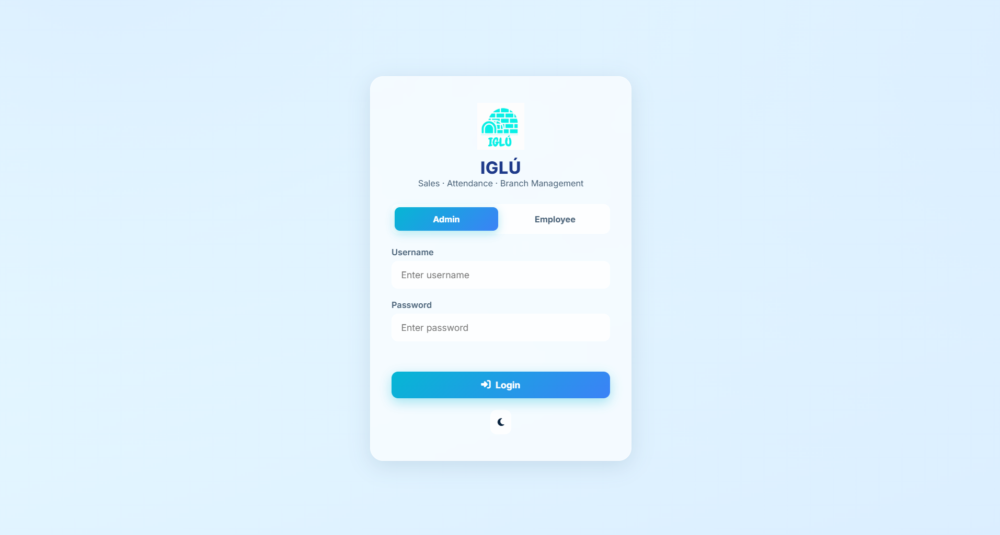
Click to zoomSecure LoginSecure Login
Individual accounts and role-based permissions help restrict system functions and records to authorized users.
PROJECT MANAGEMENT INFORMATION SYSTEMS · SECTION I302
Sales and Employee Monitoring · Barangay Salapungan, Angeles City
PROJECT PROPOSAL PRESENTATION · Use ← → to navigate
Core problem — Employee, attendance, cashier, and branch information maintained separately can cause delays, inconsistent records, and difficulty monitoring operations. Limited access controls may also expose sales and attendance data to unauthorized changes.
Difficulty organizing and accessing employee information across branches.
Inconsistent recording and monitoring of time-in, time-out, absences, and tardiness.
Difficulty organizing and monitoring cashier information and sales transactions.
Limited centralized access to branch-level operational information.
Possibility of inconsistent records and delays in updating information.
Sales and attendance records may be vulnerable without sufficient access controls.
IgluHub is a proposed web-based Multi-Branch Store Management Information System designed to centralize employee records, attendance monitoring, cashier-related records, and branch information.
Record attendance and enter cashier transactions through permitted employee functions.
Stores and validates operational records in a centralized database with role-based access and audit logging.
Reviews employee, attendance, sales, and branch information through administrative features.

Click to zoomSecure LoginIndividual accounts and role-based permissions help restrict system functions and records to authorized users.
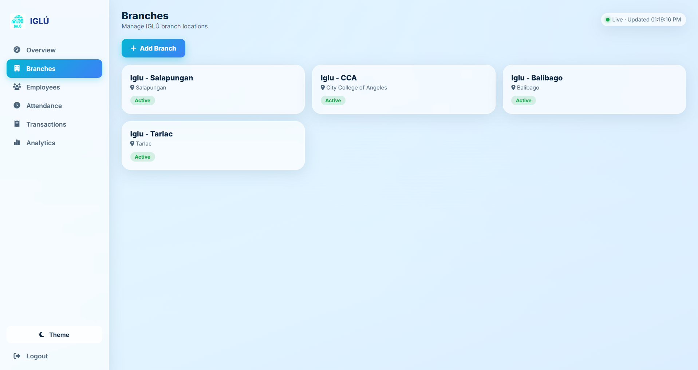
Click to zoomBranch ManagementAuthorized administrators can maintain branch information and associate employees with the appropriate branch.
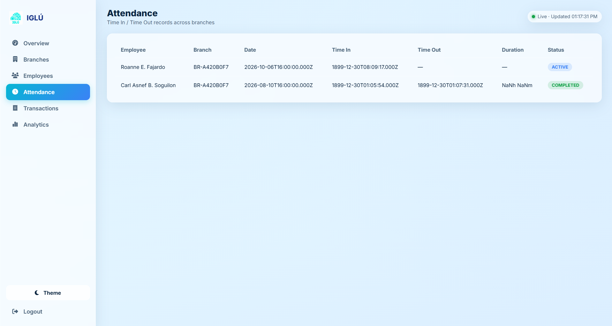
Click to zoomEmployee & Attendance MonitoringManagement can organize employee records and review attendance history, including time-in, time-out, absences, and tardiness.
How this helps IGLÚ: Gives authorized management a more organized way to maintain branch and employee information and monitor attendance across participating branches.
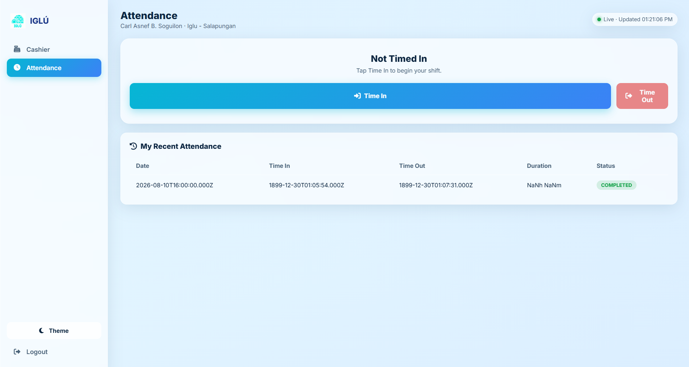
Click to zoomEmployee AttendanceEmployees can record time-in and time-out and review their own attendance history, subject to permissions.
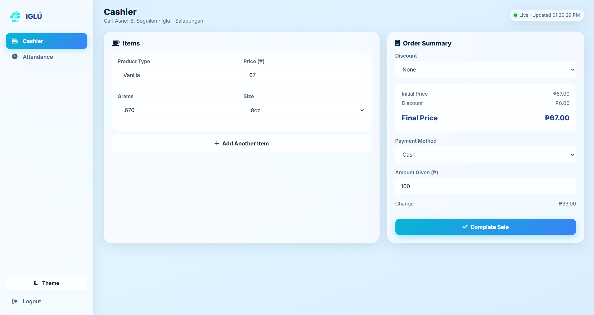
Click to zoomCashier OperationsCashiers can enter multi-item transactions, review totals, record cash or GCash details, and verify transaction information before submission.
Sensitive transaction edits or voids require manager authorization. Approved corrections and voids are recorded in the audit log rather than silently replacing the original record.
How this helps IGLÚ: Supports consistent attendance recording and more organized cashier transactions while keeping sensitive corrections under management control.
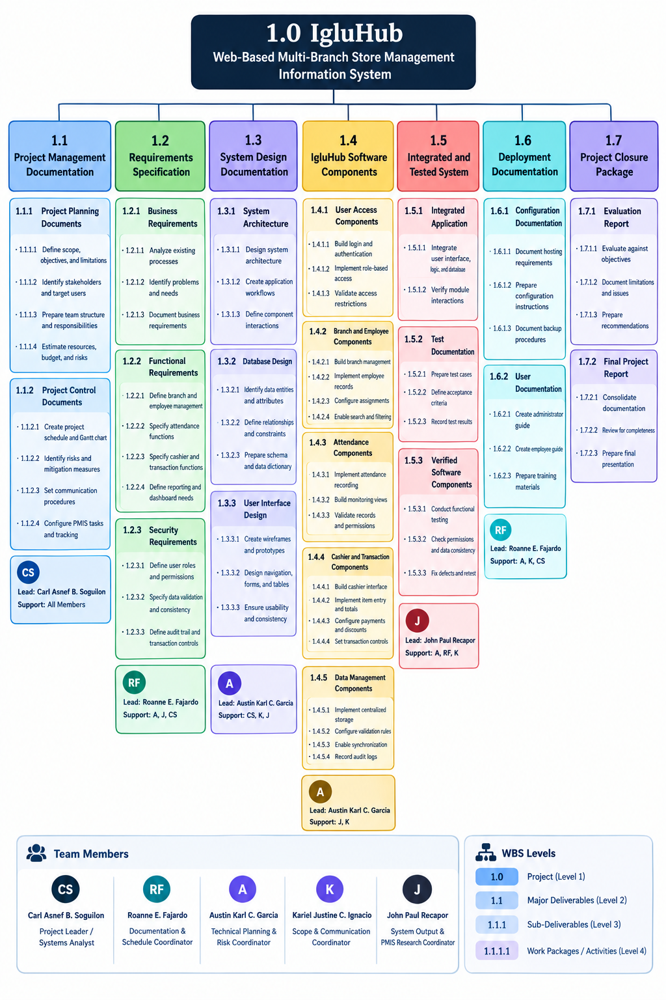
Click to zoomThe WBS organizes the project into manageable phases and work packages, providing the structure used to plan and track the proposed implementation.
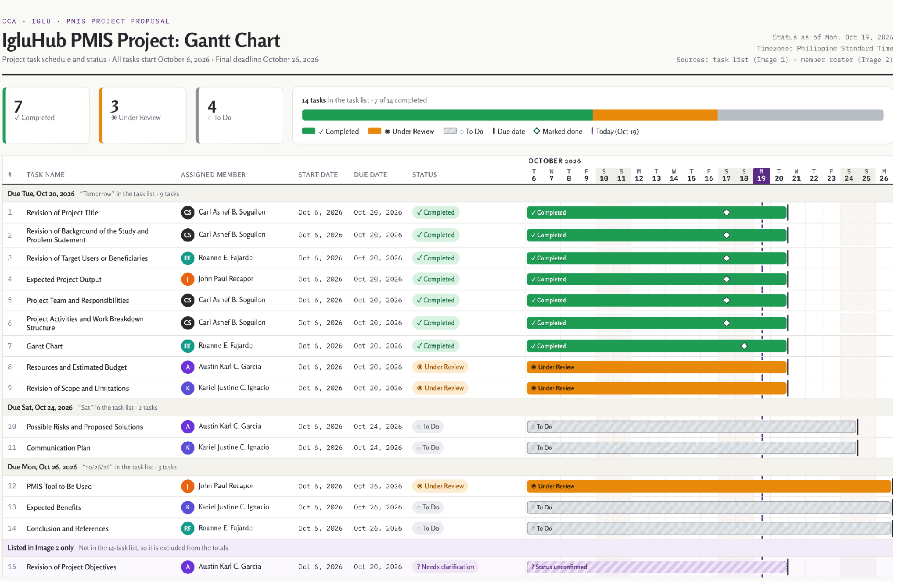
Click to zoomImportant distinction: Figure A documents the group's actual proposal-writing and revision progress. It is not the system implementation timeline.
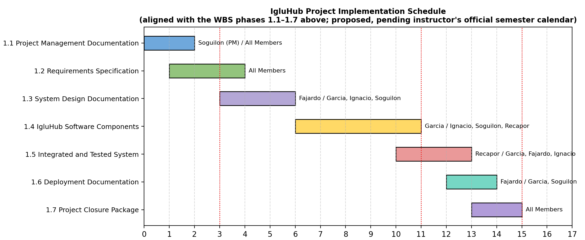
Click to zoomFigure B presents the proposed system implementation schedule. It is a plan, not evidence of completed implementation work.
| Expense | Basis | Cost |
|---|---|---|
| Internet & mobile data | Backup connectivity | ₱300 |
| Cloud hosting | Assumed free tier | ₱0 |
| Cloud database | Assumed free tier | ₱0 |
| Domain name | Optional | ₱800 |
| Development software | Free tools | ₱0 |
| Testing & printing | Review and testing documents | ₱500 |
| Transportation | Client coordination and pilot testing | ₱1,000 |
| Miscellaneous | Communication and supplies | ₱500 |
| Subtotal | ₱3,100 | |
| Contingency (10%) | ₱310 | |
| Total Estimated Budget | ₱3,410 | |
Business processes may be misunderstood.
Consult IGLÚ representatives and validate employee, attendance, pricing, discount, and transaction rules.
Additional features may exceed the approved scope and schedule.
Maintain the approved scope. Record additional requests as possible future enhancements.
Academic and personal responsibilities may affect deadlines.
Use ClickUp to assign tasks, set deadlines, monitor progress, and hold regular meetings.
Issues may occur in databases, access controls, calculations, or responsive design.
Plan early, develop core features first, test incrementally, and use GitHub for version control.
Poor connection may prevent system access or saving records.
Use stable internet and mobile data as backup. Offline transaction processing is excluded.
Incorrect employee, attendance, product, price, or transaction records.
Apply input validation, confirmation screens, and authorized record reviews. Use test data during development.
Users may access or alter restricted records.
Implement secure login, role-based permissions, session controls, and audit logs.
Files or records may be lost through errors or system issues.
Use GitHub, maintain document and database backups, and prepare a recovery procedure.
Costs may exceed the ₱3,410 estimate.
Prioritize free tools, record expenses, review purchases, and use the contingency fund only for documented needs.
Storage, reliability, or security may be inadequate.
Evaluate service limits and backup options. Seek approval before using paid services.
Employees may find the system unfamiliar or difficult.
Provide a simple responsive interface, role-based accounts, orientation, and user feedback.
The system may not work properly on available devices.
Test common desktop and mobile browsers and resolve major compatibility issues.
Unavailable representatives may delay validation and testing.
Schedule consultations early, set feedback deadlines, prepare questions, and document decisions.
Undetected errors may affect system reliability.
Test attendance, calculations, discounts, payments, permissions, transaction reviews, and audit logs before pilot implementation.
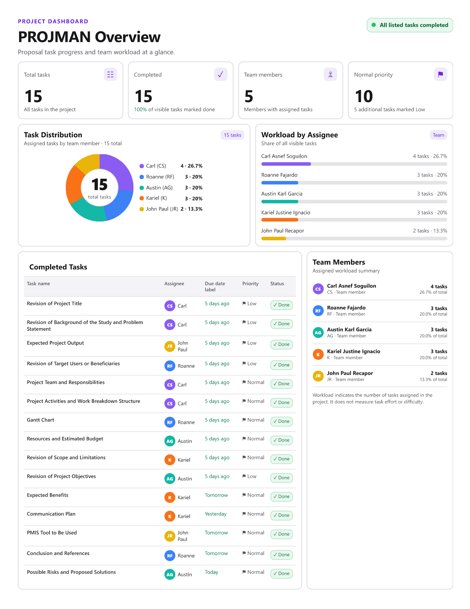
Click to zoomDashboard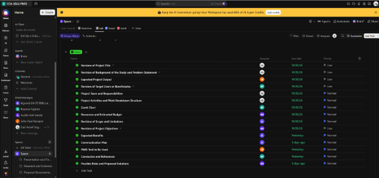
Click to zoomTask ListClickUp gives the team a shared workspace to coordinate work, follow deadlines, monitor progress, and maintain accountability.
Monitor sales, employee attendance, and branch operations through centralized records.
Consolidate information from branches and review operational records.
Maintain attendance records and access permitted work-related information.
May benefit from more organized transaction processing and checkout calculations.
Support coordination among branches through centralized operational information.
These are expected benefits. Actual results will depend on accurate data entry, proper implementation, user adoption, connectivity, and testing.
IgluHub proposes a centralized platform for managing employee records, attendance, cashier transactions, and branch information.
Role-based access, data validation, audit logs, dashboards, and reports are intended to support information consistency, monitoring, and accountability.
Its successful implementation will depend on validated business requirements, appropriate development and testing, reliable connectivity, secure configuration, and cooperation between the project team and IGLÚ.
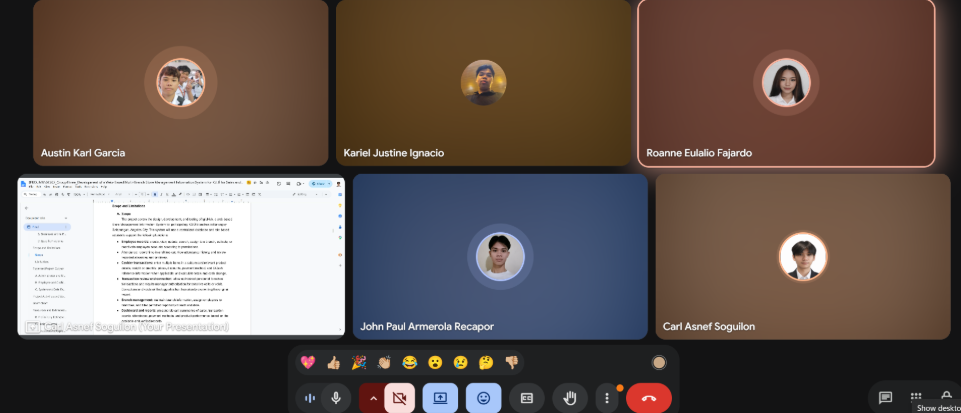
A · Rehearsal Call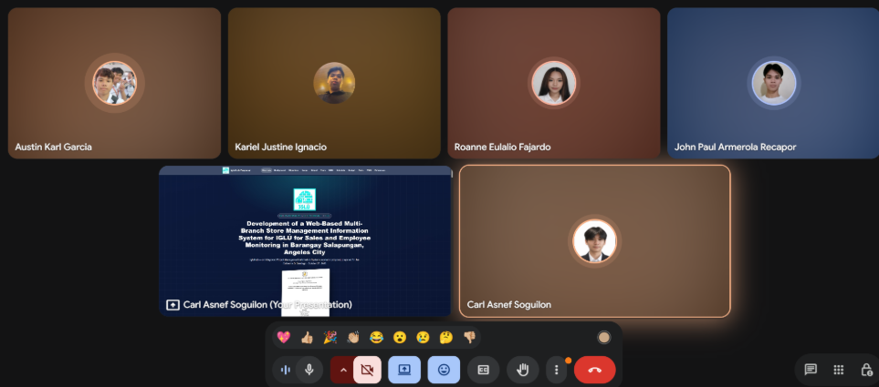
B · Title Presentation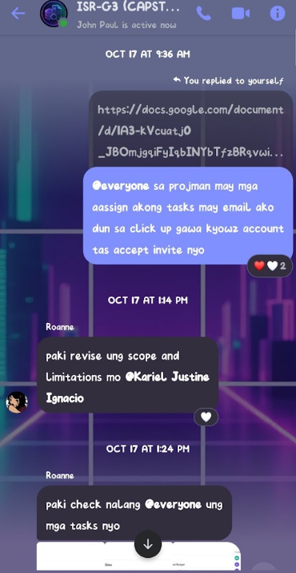
C · Team Chat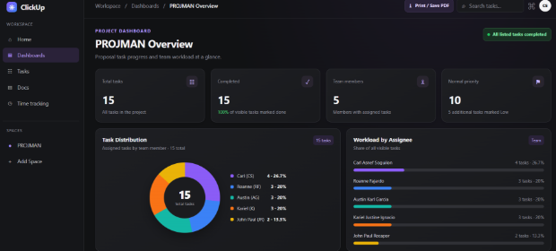
E · ClickUp Dashboard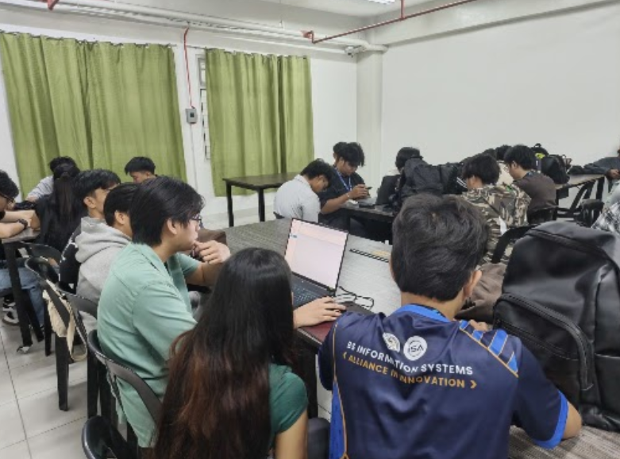
F · Team at WorkIGLUHUB · PROJECT MANAGEMENT INFORMATION SYSTEMS
Questions & Discussion
Organizing records. Supporting monitoring. Strengthening accountability.
Soguilon · Fajardo · Garcia · Ignacio · Recapor